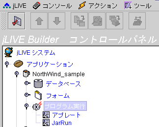
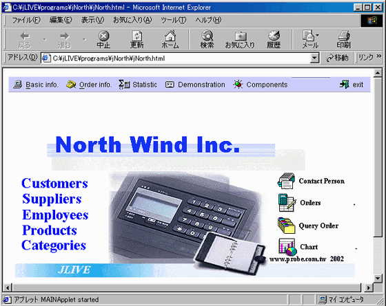
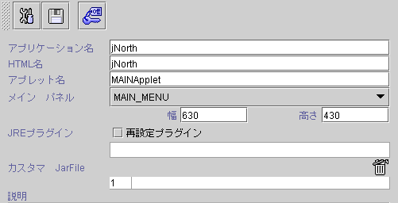
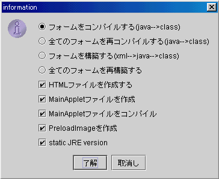

|

8.
アプリケーション実行形式
(make executable program)
ブラウザ起動アプレット
(browser enabled program -- applet run)
スタンドアロンー
(stand alone program -- jar run)
jLIVE Builder™ はブラウザ起動
(browser enabled -- applet run) とスタンドアロンー (stand alone -- jar run)
２種のアプリ実行形式を作成できます。

8.1
ブラウザ起動アプレット (browser enabled program -- applet run)
システムは自動的に一つのJava™ appletが含まれる HTMLを作成できます
。ユーザはブラウザでこれを起動し，実行させます。すべてのフォームとレポートを Web serverに配置し，モジュールが実行される時に Web
から送られます，モジュールは更新されない限り，クライアント (client)
側は再びモジュールをダンロードしなく，ローカルＰＣ上のモジュールを実行します。この機能によって効率向上に繋がり，メンテナンス・インストールもしやすくなっています。



-
フォームのコンパイル
(Java --> class) ：更新された Java™ source file
をコンパイルします( *.java *.class
)。
-
全てフォームの再コンパイル
(Java --> class) ：すべての Java™ source fileを再度コンパイルします。
-
フォームビルド
(XML --> Java --> class) ：フォームの
XML からJava™ source file (*.java)へ転換し
， 再びそれを Java class (*.class)にコンパイルします。ビルドされるのは更新されたXML
に限ります ( *.xml *.java
)。
-
全てフォームの再度ビルド
(XML --> Java --> class)：フォームの
XML から Java™ source file (*.java)
に転換し，再びそれを Java™ class (*.class)にコンパイルします。
-
HTMLファイル作成 (generate HTML file)：產ブラウザ起動のHTML
ファイルを作成します。
-
MainAppletファイル作成 (generate MainApplet)：
HTMLに組み込んでいる Java applet source fileを作成します。
-
MainApplet
ファイルのコンパイル (compile MainApplet)：HTML
に組み込んでいるJava applet source
file をコンパイルします。
-
プリロードイメージ
(generate pre-load images)：アプリの
class/preloadimage
ディレクトリ下のイメージを jimage.jar
に圧縮し，
class フォルダーの下に置きます。
-
Static
JRE Version ： static JRE version をチェックします。Applet
はJava™
の特別なバージョンを使用します。もし，まだインストールされなければ，可能であれば，このバージョンが自動にダンロードされます。或いは手動ダンロード画面に誘導されます。
http://java.sun.com/products/plugin を参考してください。
-
保存 (save
modified applet settings)
( 修正保存設定 )
-
セキュリティ (security
control)
( セキュリティコントロール ) jLIVE Builder™
システムデフォルト登録機能。
-
アプリ名 (app name)：一つのアプリに多数の HTML
を作成できます，異なるフォームと権限の設定ができます，ユーザとして異なる HTMLに登録が可能です。
-
Html 名 (html name)：HTML
名前，編集可能です。
-
Applet 名 (applet name)：システムはデフォルトとしての
Java™
applet
ソースコード (source code)を作成し，デザインナーはニーズによって編集ができます。
-
メインパネル (main
panel)：初めて実行される画面です。メインとして設定されるとブラウザに組み込まれます。メインでない場合，枠の形で表示されます。
-
リダイレクト Plugin
(redirect plug in)：URLが HTML
に組み込まれ，クライアント (client)は JRE (Java Runtime
Environment) をブラウザにインストールしていない場合，これによってJREがダンロードされます。空白の場合， Sun
の Web はデフォルトとして設定されます。
-
特製
Jar 檔 (custom jar file)：jLIVE™
の場合，デザインナーは外部の
class をコールすることが可能です，或いは第３社に開発されたモジュール (third party jar)，参照される class
を入力し，この jar をアプリの class 下に置き，アプリ起動される同時にクライアント (client)に一緒に転送されます。
-
説明 (description)：デザインナーよりアプリに関する説明です。
▲Top
Copyright © 2001~
2004 Probe Technology . All Rights Reserved.
Questions, comments,
and suggestions to Service@probe.com.tw
|